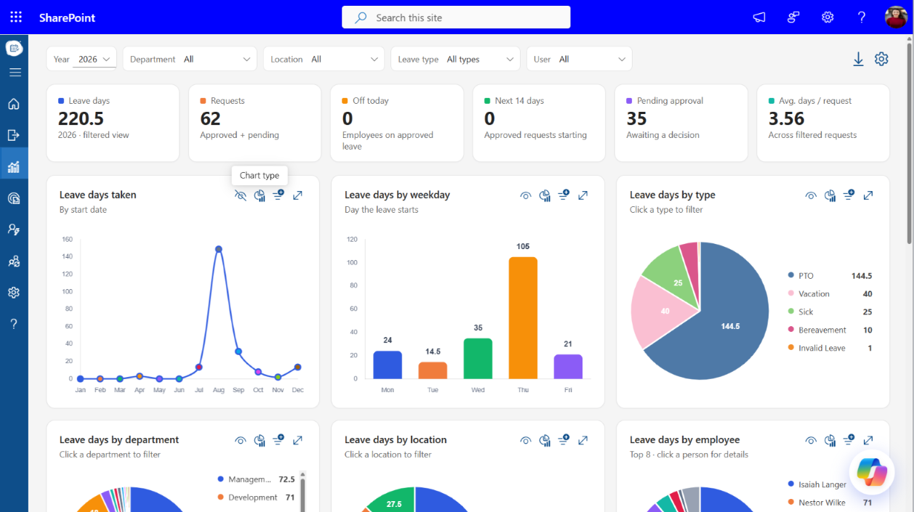
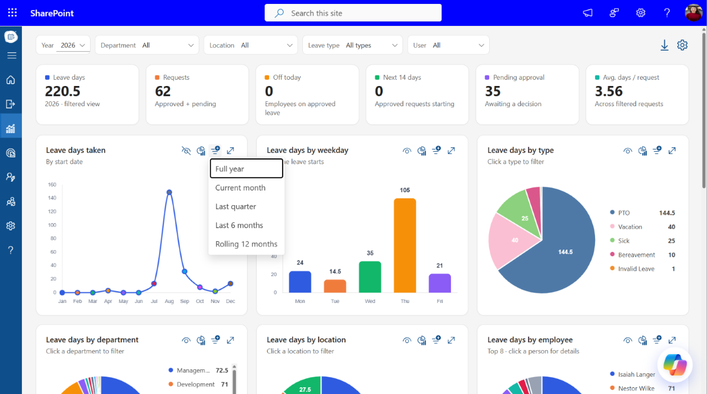
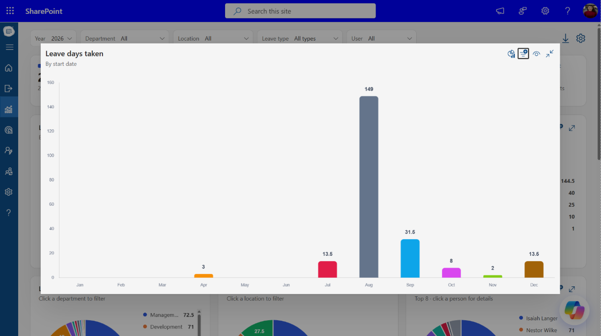
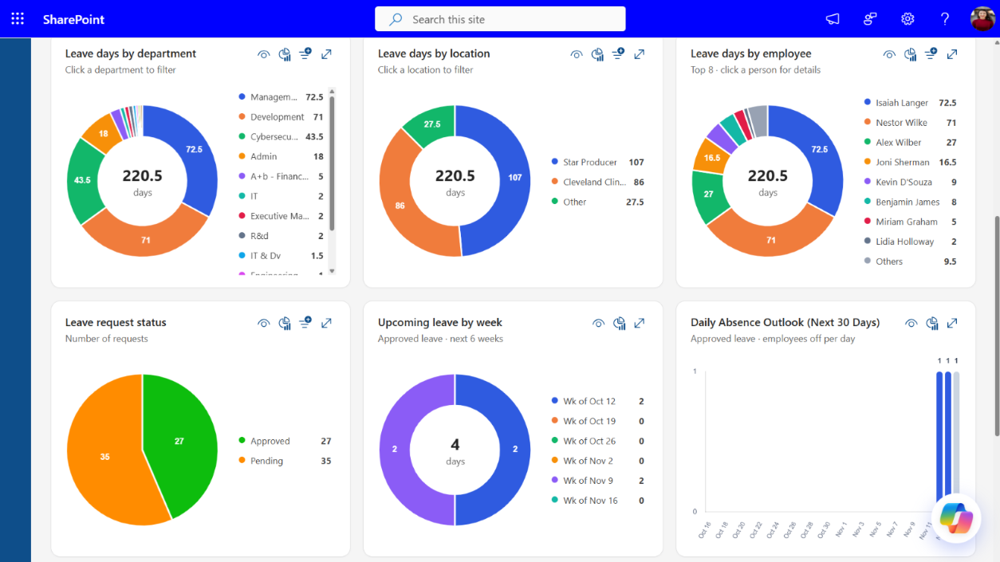
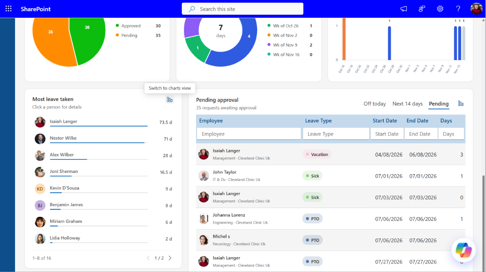
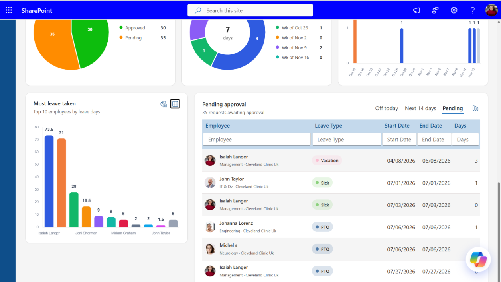
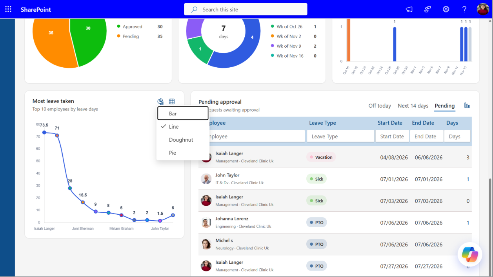
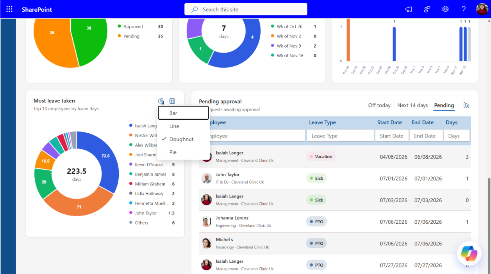
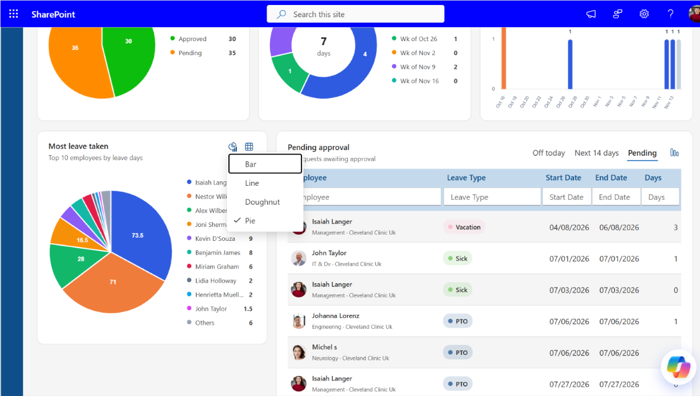
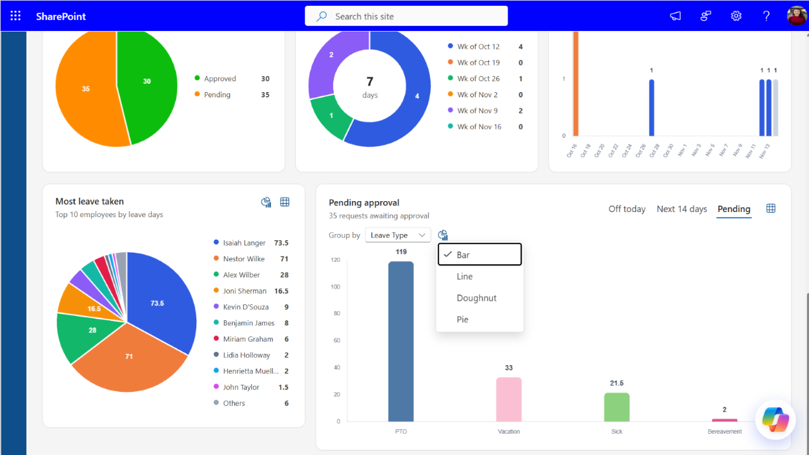

Dashboard
The Dashboard gives administrators a single view of leave activity across the organization: how many days are being taken, by whom, when, and what is still waiting for approval.
Open the Dashboard
- Open Time-off Manager in SharePoint.
- Select the Dashboard icon (chart) in the left navigation.
Filters
The filter bar at the top applies to every card, chart and table on the page.
| Filter | What it does |
|---|---|
| Year | Selects the leave year to report on. |
| Department | Limits data to one or more departments. |
| Location | Limits data to one or more office locations. |
| Leave type | Limits data to specific leave types (e.g. PTO, Vacation, Sick). |
| User | Shows data for selected employees only. |
Two actions sit at the right of the filter bar:
- Download: Exports the dashboard data for the current filters.
- Settings: Configures the dashboard.
Tip: Many charts are also filters. Clicking a slice in Leave days by type, department or location filters the whole dashboard to that value.
Summary cards
Six cards below the filters show the key numbers for the filtered view.
| Card | Shows |
|---|---|
| Leave days | Total leave days for the selected year and filters. |
| Requests | Number of requests, approved and pending. |
| Off today | Employees on approved leave today. |
| Next 14 days | Approved requests starting in the next 14 days. |
| Pending approval | Requests awaiting a decision. |
| Avg. days / request | Average length of a request across the filtered requests. |
Chart controls
Each chart has a toolbar in its top-right corner. Hover an icon to see its name.
| Control | What it does |
|---|---|
| Show / hide values | Turns the data labels on the chart on or off. |
| Chart type | Switches the chart style, e.g. Bar or Line. |
| Time range | Changes the period for that chart: Full year, Current month, Last quarter, Last 6 months or Rolling 12 months. |
| Expand | Opens the chart in a large view. Select Collapse to return. |



Charts
| Chart | Shows |
|---|---|
| Leave days taken | Leave days per month, by start date. |
| Leave days by weekday | Leave days grouped by the weekday the leave starts. |
| Leave days by type | Split by leave type. Click a type to filter. |
| Leave days by department | Split by department, with the total in the centre. Click a department to filter. |
| Leave days by location | Split by location. Click a location to filter. |
| Leave days by employee | Top 8 employees; the rest are grouped as Others. Click a person for details. |
| Leave request status | Number of requests by status (Approved, Pending). |
| Upcoming leave by week | Approved leave days for each of the next 6 weeks. |
| Daily Absence Outlook (Next 30 Days) | Number of employees on approved leave for each of the next 30 days. |

Most leave taken
Ranks employees by leave days taken, with a bar showing each person's share. Click a name to see that person's details. Use the arrows at the bottom to page through the list.
Charts view
Select Switch to charts view (chart icon, top right) to see the top 10 employees by leave days as a chart. In charts view:
- Chart type: Choose Bar, Line, Doughnut or Pie. Doughnut shows the total days in the centre; Doughnut and Pie group the remaining employees as Others.
- Table view (grid icon): Returns to the list.





Who is off today
A table of employees on leave, with three tabs:
- Off today: Employees on approved leave today.
- Next 14 days: Approved leave starting in the next 14 days.
- Pending: Requests awaiting approval.
The card title and summary line change with the tab: Who is off today, Upcoming leave or Pending approval.
Columns are Employee (with department and location), Leave Type, Start Date, End Date and Days. Type in the box under a column heading to filter by it. Use Show Entries to set the number of rows per page and the arrows to move between pages.
Charts view
Select the chart icon next to the tabs to show the current tab's data as a chart:
- Group by: Choose the field to group by, e.g. Leave Type.
- Chart type: Bar, Line, Doughnut or Pie.
- Table view (grid icon): Returns to the table.
